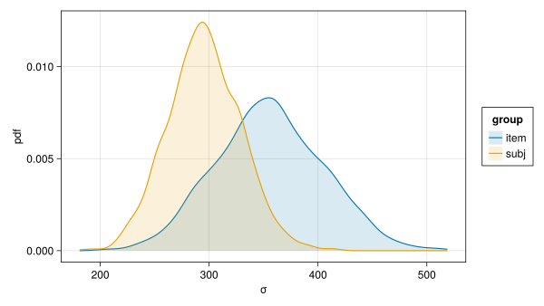

Code
using AlgebraOfGraphics
using CairoMakie
using DataFrameMacros
using DataFrames
using MixedModels
using ProgressMeter
using Random
CairoMakie.activate!(; type="svg");
ProgressMeter.ijulia_behavior(:clear);Phillip Alday, Douglas Bates, and Reinhold Kliegl
2022-09-11
Begin by loading the packages to be used.
Provide a short alias for AlgebraOfGraphics.
The kb07 data (Kronmüller & Barr, 2007) are one of the datasets provided by the MixedModels package.
Arrow.Table with 1789 rows, 7 columns, and schema:
:subj String
:item String
:spkr String
:prec String
:load String
:rt_trunc Int16
:rt_raw Int16Convert the table to a DataFrame for summary.
7 rows × 7 columns
| variable | mean | min | median | max | nmissing | eltype | |
|---|---|---|---|---|---|---|---|
| Symbol | Union… | Any | Union… | Any | Int64 | DataType | |
| 1 | subj | S030 | S103 | 0 | String | ||
| 2 | item | I01 | I32 | 0 | String | ||
| 3 | spkr | new | old | 0 | String | ||
| 4 | prec | break | maintain | 0 | String | ||
| 5 | load | no | yes | 0 | String | ||
| 6 | rt_trunc | 2182.2 | 579 | 1940.0 | 5171 | 0 | Int16 |
| 7 | rt_raw | 2226.24 | 579 | 1940.0 | 15923 | 0 | Int16 |
The experimental factors; spkr, prec, and load, are two-level factors. The EffectsCoding contrast is used with these to create a \(\pm1\) encoding. Furthermore, Grouping constrasts are assigned to the subj and item factors. This is not a contrast per-se but an indication that these factors will be used as grouping factors for random effects and, therefore, there is no need to create a contrast matrix. For large numbers of levels in a grouping factor, an attempt to create a contrast matrix may cause memory overflow.
It is not important in these cases but a good practice in any case.
The display of an initial model fit
kbm01 = let
form = @formula(
rt_trunc ~
1 +
spkr * prec * load +
(1 + spkr + prec + load | subj) +
(1 + spkr + prec + load | item)
)
fit(MixedModel, form, kb07; contrasts)
endMinimizing 722 Time: 0:00:01 ( 2.41 ms/it)
objective: 28637.1393507629| Est. | SE | z | p | σ_subj | σ_item | |
|---|---|---|---|---|---|---|
| (Intercept) | 2181.6750 | 77.3042 | 28.22 | <1e-99 | 301.8457 | 362.1769 |
| spkr: old | 67.7490 | 18.2846 | 3.71 | 0.0002 | 43.0723 | 40.5401 |
| prec: maintain | -333.9206 | 47.1549 | -7.08 | <1e-11 | 62.1055 | 246.8926 |
| load: yes | 78.7681 | 19.5218 | 4.03 | <1e-04 | 65.1378 | 42.1405 |
| spkr: old & prec: maintain | -21.9634 | 15.8063 | -1.39 | 0.1647 | ||
| spkr: old & load: yes | 18.3838 | 15.8063 | 1.16 | 0.2448 | ||
| prec: maintain & load: yes | 4.5334 | 15.8063 | 0.29 | 0.7743 | ||
| spkr: old & prec: maintain & load: yes | 23.6051 | 15.8063 | 1.49 | 0.1353 | ||
| Residual | 668.5074 |
does not include the estimated correlations of the random effects.
The VarCorr extractor displays these.
| Column | Variance | Std.Dev | Corr. | |||
|---|---|---|---|---|---|---|
| subj | (Intercept) | 91110.8185 | 301.8457 | |||
| spkr: old | 1855.2224 | 43.0723 | +0.78 | |||
| prec: maintain | 3857.0961 | 62.1055 | -0.59 | +0.02 | ||
| load: yes | 4242.9381 | 65.1378 | +0.36 | +0.82 | +0.53 | |
| item | (Intercept) | 131172.1058 | 362.1769 | |||
| spkr: old | 1643.4957 | 40.5401 | +0.44 | |||
| prec: maintain | 60955.9375 | 246.8926 | -0.69 | +0.35 | ||
| load: yes | 1775.8252 | 42.1405 | +0.32 | +0.23 | -0.15 | |
| Residual | 446902.1445 | 668.5074 |
None of the two-factor or three-factor interaction terms in the fixed-effects are significant. In the random-effects terms only the scalar random effects and the prec random effect for item appear to be warranted, leading to the reduced formula
kbm02 = let
form = @formula(
rt_trunc ~
1 + spkr + prec + load + (1 | subj) + (1 + prec | item)
)
fit(MixedModel, form, kb07; contrasts)
endMinimizing 93 Time: 0:00:00 ( 1.20 ms/it)| Est. | SE | z | p | σ_item | σ_subj | |
|---|---|---|---|---|---|---|
| (Intercept) | 2181.8526 | 77.4681 | 28.16 | <1e-99 | 364.7125 | 298.0259 |
| spkr: old | 67.8790 | 16.0785 | 4.22 | <1e-04 | ||
| prec: maintain | -333.7906 | 47.4472 | -7.03 | <1e-11 | 252.5212 | |
| load: yes | 78.5904 | 16.0785 | 4.89 | <1e-05 | ||
| Residual | 680.0319 |
| Column | Variance | Std.Dev | Corr. | |
|---|---|---|---|---|
| item | (Intercept) | 133015.240 | 364.713 | |
| prec: maintain | 63766.936 | 252.521 | -0.70 | |
| subj | (Intercept) | 88819.437 | 298.026 | |
| Residual | 462443.388 | 680.032 |
These two models are nested and can be compared with a likelihood-ratio test.
| model-dof | deviance | χ² | χ²-dof | P(>χ²) | |
|---|---|---|---|---|---|
| rt_trunc ~ 1 + spkr + prec + load + (1 | subj) + (1 + prec | item) | 9 | 28664 | |||
| rt_trunc ~ 1 + spkr + prec + load + spkr & prec + spkr & load + prec & load + spkr & prec & load + (1 + spkr + prec + load | subj) + (1 + spkr + prec + load | item) | 29 | 28637 | 27 | 20 | 0.1436 |
The p-value of approximately 14% leads us to prefer the simpler model, kbm02, to the more complex, kbm01.
Create a bootstrap sample of a few thousand parameter estimates from the reduced model. The pseudo-random number generator is initialized to a fixed value for reproducibility.
One of the uses of such a sample is to form “confidence intervals” on the parameters by obtaining the shortest interval that covers a given proportion (95%, by default) of the sample.
9 rows × 5 columns
| type | group | names | lower | upper | |
|---|---|---|---|---|---|
| String | String? | String? | Float64 | Float64 | |
| 1 | β | missing | (Intercept) | 2028.01 | 2337.92 |
| 2 | β | missing | spkr: old | 38.431 | 99.5944 |
| 3 | β | missing | prec: maintain | -439.321 | -245.864 |
| 4 | β | missing | load: yes | 46.0262 | 107.511 |
| 5 | σ | item | (Intercept) | 261.196 | 448.51 |
| 6 | σ | item | prec: maintain | 175.489 | 312.038 |
| 7 | ρ | item | (Intercept), prec: maintain | -0.89799 | -0.445595 |
| 8 | σ | subj | (Intercept) | 228.099 | 357.789 |
| 9 | σ | residual | missing | 655.249 | 701.497 |
A sample like this can be used for more than just creating an interval because it approximates the distribution of the estimator. For the fixed-effects parameters the estimators are close to being normally distributed, Figure 1.
